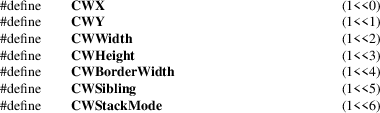

XConfigureWindow, XMoveWindow, XResizeWindow, XMoveResizeWindow, XSetWindowBorderWidth, XWindowChanges − configure windows and window changes structure
|
int XConfigureWindow(Display *display, Window w, unsigned value_mask, XWindowChanges *changes); | |
|
int XMoveWindow(Display *display, Window w, int x, y); | |
|
int XResizeWindow(Display *display, Window w, unsigned width, unsigned height); | |
|
int XMoveResizeWindow(Display *display, Window w, int x, int y, unsigned width, unsigned height); | |
|
int XSetWindowBorderWidth(Display *display, Window w, unsigned width); |
|
display |
Specifies the connection to the X server. |
value_mask
Specifies which values are to be set using information in the values structure. This mask is the bitwise inclusive OR of the valid configure window values bits.
|
values |
Specifies the XWindowChanges structure. | ||
|
w |
Specifies the window to be reconfigured, moved, or resized.. | ||
|
width |
Specifies the width of the window border. | ||
|
width |
|||
|
height |
Specify the width and height, which are the interior dimensions of the window. | ||
|
x |
|||
|
y |
Specify the x and y coordinates, which define the new location of the top-left pixel of the window’s border or the window itself if it has no border or define the new position of the window relative to its parent. |
The XConfigureWindow function uses the values specified in the XWindowChanges structure to reconfigure a window’s size, position, border, and stacking order. Values not specified are taken from the existing geometry of the window.
If a sibling is specified without a stack_mode or if the window is not actually a sibling, a BadMatch error results. Note that the computations for BottomIf, TopIf, and Opposite are performed with respect to the window’s final geometry (as controlled by the other arguments passed to XConfigureWindow), not its initial geometry. Any backing store contents of the window, its inferiors, and other newly visible windows are either discarded or changed to reflect the current screen contents (depending on the implementation).
XConfigureWindow can generate BadMatch, BadValue, and BadWindow errors.
The XMoveWindow function moves the specified window to the specified x and y coordinates, but it does not change the window’s size, raise the window, or change the mapping state of the window. Moving a mapped window may or may not lose the window’s contents depending on if the window is obscured by nonchildren and if no backing store exists. If the contents of the window are lost, the X server generates Expose events. Moving a mapped window generates Expose events on any formerly obscured windows.
If the override-redirect flag of the window is False and some other client has selected SubstructureRedirectMask on the parent, the X server generates a ConfigureRequest event, and no further processing is performed. Otherwise, the window is moved.
XMoveWindow can generate a BadWindow error.
The XResizeWindow function changes the inside dimensions of the specified window, not including its borders. This function does not change the window’s upper-left coordinate or the origin and does not restack the window. Changing the size of a mapped window may lose its contents and generate Expose events. If a mapped window is made smaller, changing its size generates Expose events on windows that the mapped window formerly obscured.
If the override-redirect flag of the window is False and some other client has selected SubstructureRedirectMask on the parent, the X server generates a ConfigureRequest event, and no further processing is performed. If either width or height is zero, a BadValue error results.
XResizeWindow can generate BadValue and BadWindow errors.
The XMoveResizeWindow function changes the size and location of the specified window without raising it. Moving and resizing a mapped window may generate an Expose event on the window. Depending on the new size and location parameters, moving and resizing a window may generate Expose events on windows that the window formerly obscured.
If the override-redirect flag of the window is False and some other client has selected SubstructureRedirectMask on the parent, the X server generates a ConfigureRequest event, and no further processing is performed. Otherwise, the window size and location are changed.
XMoveResizeWindow can generate BadValue and BadWindow errors.
The XSetWindowBorderWidth function sets the specified window’s border width to the specified width.
XSetWindowBorderWidth can generate a BadWindow error.
The XWindowChanges structure contains:
/* Configure window value mask bits */

/* Values */
typedef struct
{
int x, y;
int width, height;
int border_width;
Window sibling;
int stack_mode;
} XWindowChanges;
The x and y members are used to set the window’s x and y coordinates, which are relative to the parent’s origin and indicate the position of the upper-left outer corner of the window. The width and height members are used to set the inside size of the window, not including the border, and must be nonzero, or a BadValue error results. Attempts to configure a root window have no effect.
The border_width member is used to set the width of the border in pixels. Note that setting just the border width leaves the outer-left corner of the window in a fixed position but moves the absolute position of the window’s origin. If you attempt to set the border-width attribute of an InputOnly window nonzero, a BadMatch error results.
The sibling member is used to set the sibling window for stacking operations. The stack_mode member is used to set how the window is to be restacked and can be set to Above, Below, TopIf, BottomIf, or Opposite.
|
BadMatch |
An InputOnly window is used as a Drawable. | ||
|
BadMatch |
Some argument or pair of arguments has the correct type and range but fails to match in some other way required by the request. | ||
|
BadValue |
Some numeric value falls outside the range of values accepted by the request. Unless a specific range is specified for an argument, the full range defined by the argument’s type is accepted. Any argument defined as a set of alternatives can generate this error. | ||
|
BadWindow |
A value for a Window argument does not name a defined Window. |
XChangeWindowAttributes(3),
XCreateWindow(3), XDestroyWindow(3), XMapWindow(3),
XRaiseWindow(3), XUnmapWindow(3)
Xlib − C Language X Interface